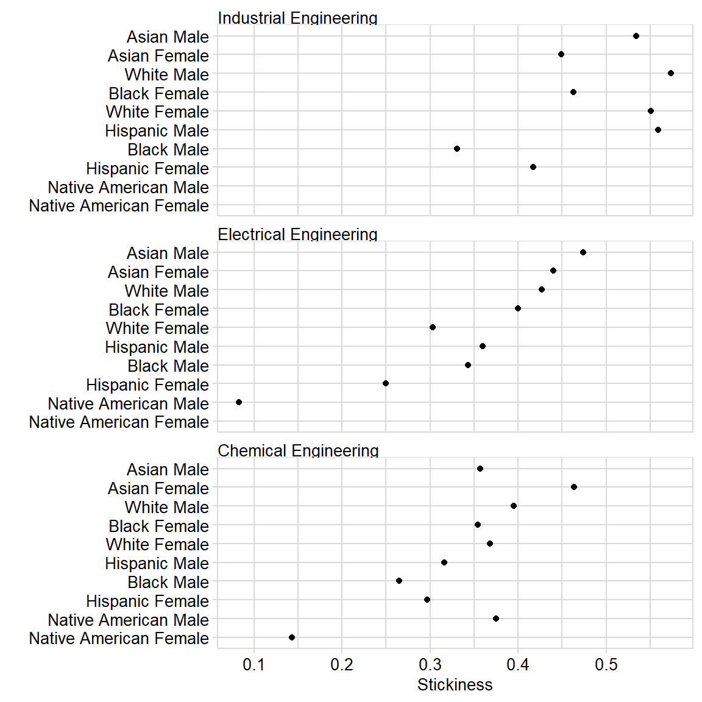

This exercise illustrates a typical workflow for computing a persistence metric, starting with student record data and ending with a multiway graph.
Our metric in this case is “stickiness”, the ratio of the number of students graduating from a program to the number ever enrolled in the program (Ohland et al. 2012). We compare the stickiness of three engineering programs with students grouped by program, race, and sex.
In this introductory example, conveying what is more important than how. Thus, instead of explaining how the code works, we explain what the steps are and how they fit together. For explanations of how the code works, see the other vignettes.
We wish to compare the stickiness of three programs: Chemical Engineering, Electrical Engineering, and Industrial Engineering with students grouped by program, race, and sex.
# packages used in the vignette library("midfieldr") library("midfielddata") library("dplyr") library("seplyr") library("ggplot2")
Search the cip data set for the programs we want. The results show that the 4-digit codes we want are 1407, 1410, and 1435.
cip %>% cip_filter(keep_any = "engineering", drop_any = c("tech", "bio")) %>% cip_filter(keep_any = c("chemical", "electrical", "industrial")) %>% print()
| cip2 | cip2name | cip4 | cip4name | cip6 | cip6name |
|---|---|---|---|---|---|
| 14 | Engineering | 1407 | Chemical Engineering | 140701 | Chemical Engineering |
| 14 | Engineering | 1407 | Chemical Engineering | 140799 | Chemical Engineering, Other |
| 14 | Engineering | 1410 | Electrical, Electronics and Communications Engineering | 141001 | Electrical, Electronics and Communications Engineering |
| 14 | Engineering | 1410 | Electrical, Electronics and Communications Engineering | 141003 | Laser and Optical Engineering |
| 14 | Engineering | 1410 | Electrical, Electronics and Communications Engineering | 141004 | Telecommunications Engineering |
| 14 | Engineering | 1410 | Electrical, Electronics and Communications Engineering | 141099 | Electrical, Electronics and Communications Engineering, Other |
| 14 | Engineering | 1435 | Industrial Engineering | 143501 | Industrial Engineering |
Knowing the programs we want (in this example, 1407, 1410, and 1435) we extract their 6-digit codes and assign a concise program name.
# chemical engineering che <- cip %>% cip_filter(keep_any = "^1407") %>% cip6_select(program = "Chemical Engineering") # electrical engineering ece <- cip %>% cip_filter(keep_any = "^1410") %>% cip6_select(program = "Electrical Engineering") # industrial engineering ise <- cip %>% cip_filter(keep_any = "^1435") %>% cip6_select(program = "Industrial Engineering")
We combine the three programs into one data frame.
| cip6 | cip6name | program |
|---|---|---|
| 140701 | Chemical Engineering | Chemical Engineering |
| 140702 | Chemical and Biomolecular Engineering | Chemical Engineering |
| 140799 | Chemical Engineering, Other | Chemical Engineering |
| 141001 | Electrical, Electronics and Communications Engineering | Electrical Engineering |
| 141003 | Laser and Optical Engineering | Electrical Engineering |
| 141004 | Telecommunications Engineering | Electrical Engineering |
| 141099 | Electrical, Electronics and Communications Engineering, Other | Electrical Engineering |
| 143501 | Industrial Engineering | Industrial Engineering |
Finally, we extract the 6-digit CIP codes from our program group to use as search terms to identify students in these programs.
# for filtering operations program_group_cip6 <- program_group[["cip6"]] %>% print() #> [1] "140701" "140702" "140799" "141001" "141003" "141004" "141099" "143501"
Use access the midfieldterms dataset and extract all students who ever enrolled in these programs.
students <- midfieldterms %>% ever_filter(codes = program_group_cip6) %>% print() #> # A tibble: 6,402 x 2 #> id cip6 #> <chr> <chr> #> 1 MID25783178 140701 #> 2 MID25783178 143501 #> 3 MID25783197 140701 #> 4 MID25783257 140701 #> 5 MID25783491 141001 #> 6 MID25783606 141001 #> 7 MID25783912 143501 #> 8 MID25784118 141001 #> 9 MID25784209 141001 #> 10 MID25784234 143501 #> # ... with 6,392 more rows
Use access the midfieldstudents dataset and append students’ race and sex to the working data frame.
students <- students %>% race_sex_join() %>% print() #> # A tibble: 6,402 x 4 #> id cip6 race sex #> <chr> <chr> <chr> <chr> #> 1 MID25783178 140701 Black Male #> 2 MID25783178 143501 Black Male #> 3 MID25783197 140701 White Male #> 4 MID25783257 140701 White Male #> 5 MID25783491 141001 White Male #> 6 MID25783606 141001 White Male #> 7 MID25783912 143501 White Male #> 8 MID25784118 141001 White Male #> 9 MID25784209 141001 International Male #> 10 MID25784234 143501 White Male #> # ... with 6,392 more rows
We join our custom program names to the student data.
students <- left_join(students, program_group, by = "cip6") %>% print() #> # A tibble: 6,402 x 6 #> id cip6 race sex cip6name program #> <chr> <chr> <chr> <chr> <chr> <chr> #> 1 MID2578~ 140701 Black Male Chemical Engineering Chemical Engi~ #> 2 MID2578~ 143501 Black Male Industrial Engineering Industrial En~ #> 3 MID2578~ 140701 White Male Chemical Engineering Chemical Engi~ #> 4 MID2578~ 140701 White Male Chemical Engineering Chemical Engi~ #> 5 MID2578~ 141001 White Male Electrical, Electronics and C~ Electrical En~ #> 6 MID2578~ 141001 White Male Electrical, Electronics and C~ Electrical En~ #> 7 MID2578~ 143501 White Male Industrial Engineering Industrial En~ #> 8 MID2578~ 141001 White Male Electrical, Electronics and C~ Electrical En~ #> 9 MID2578~ 141001 Internat~ Male Electrical, Electronics and C~ Electrical En~ #> 10 MID2578~ 143501 White Male Industrial Engineering Industrial En~ #> # ... with 6,392 more rows
We create a vector of variable names to be used for grouping, summarizing, and joining.
# for group, summarize, and join operations grouping_variables <- c("program", "race", "sex")
We count the number of students ever enrolled grouped by program, race/ethnicity, and sex.
# count students ever enrolled ever_enrolled <- students %>% group_summarize(grouping_variables, ever = n()) %>% print() #> # A tibble: 48 x 4 #> program race sex ever #> <chr> <chr> <chr> <int> #> 1 Chemical Engineering Asian Female 56 #> 2 Chemical Engineering Asian Male 98 #> 3 Chemical Engineering Black Female 147 #> 4 Chemical Engineering Black Male 98 #> 5 Chemical Engineering Hispanic Female 37 #> 6 Chemical Engineering Hispanic Male 57 #> 7 Chemical Engineering International Female 8 #> 8 Chemical Engineering International Male 23 #> 9 Chemical Engineering Native American Female 7 #> 10 Chemical Engineering Native American Male 8 #> # ... with 38 more rows
We repeat the process to group and summarize graduates from our three programs.
# count students graduating graduated <- midfielddegrees %>% grad_filter(codes = program_group_cip6) %>% race_sex_join() %>% left_join(program_group, by = "cip6") %>% group_summarize(grouping_variables, grad = n()) %>% print() #> # A tibble: 45 x 4 #> program race sex grad #> <chr> <chr> <chr> <int> #> 1 Chemical Engineering Asian Female 26 #> 2 Chemical Engineering Asian Male 35 #> 3 Chemical Engineering Black Female 52 #> 4 Chemical Engineering Black Male 26 #> 5 Chemical Engineering Hispanic Female 11 #> 6 Chemical Engineering Hispanic Male 18 #> 7 Chemical Engineering International Female 4 #> 8 Chemical Engineering International Male 7 #> 9 Chemical Engineering Native American Female 1 #> 10 Chemical Engineering Native American Male 3 #> # ... with 35 more rows
We join the two data frames by the grouping variables.
stickiness <- left_join(ever_enrolled, graduated, by = grouping_variables) %>% print() #> # A tibble: 48 x 5 #> program race sex ever grad #> <chr> <chr> <chr> <int> <int> #> 1 Chemical Engineering Asian Female 56 26 #> 2 Chemical Engineering Asian Male 98 35 #> 3 Chemical Engineering Black Female 147 52 #> 4 Chemical Engineering Black Male 98 26 #> 5 Chemical Engineering Hispanic Female 37 11 #> 6 Chemical Engineering Hispanic Male 57 18 #> 7 Chemical Engineering International Female 8 4 #> 8 Chemical Engineering International Male 23 7 #> 9 Chemical Engineering Native American Female 7 1 #> 10 Chemical Engineering Native American Male 8 3 #> # ... with 38 more rows
We omit rows with zero students ever enrolled so we can compute stickiness, the ratio of grad to ever.
# compute the metric stickiness <- stickiness %>% filter(ever > 0) %>% mutate(stick = round(grad / ever, 3)) %>% print() #> # A tibble: 48 x 6 #> program race sex ever grad stick #> <chr> <chr> <chr> <int> <int> <dbl> #> 1 Chemical Engineering Asian Female 56 26 0.464 #> 2 Chemical Engineering Asian Male 98 35 0.357 #> 3 Chemical Engineering Black Female 147 52 0.354 #> 4 Chemical Engineering Black Male 98 26 0.265 #> 5 Chemical Engineering Hispanic Female 37 11 0.297 #> 6 Chemical Engineering Hispanic Male 57 18 0.316 #> 7 Chemical Engineering International Female 8 4 0.5 #> 8 Chemical Engineering International Male 23 7 0.304 #> 9 Chemical Engineering Native American Female 7 1 0.143 #> 10 Chemical Engineering Native American Male 8 3 0.375 #> # ... with 38 more rows
To prepare the stickiness data for graphing, we remove ambiguous levels of race/ethnicity and sex.
# prepare data for graphing mw_data <- stickiness %>% filter(!race %in% c("Unknown", "International", "Other")) %>% filter(!sex %in% "Unknown")
To protect confidentiality, we omit observations with 5 or fewer students ever enrolled.
# protect confidentiality of small populations mw_data <- mw_data %>% filter(ever > 5) %>% print() #> # A tibble: 27 x 6 #> program race sex ever grad stick #> <chr> <chr> <chr> <int> <int> <dbl> #> 1 Chemical Engineering Asian Female 56 26 0.464 #> 2 Chemical Engineering Asian Male 98 35 0.357 #> 3 Chemical Engineering Black Female 147 52 0.354 #> 4 Chemical Engineering Black Male 98 26 0.265 #> 5 Chemical Engineering Hispanic Female 37 11 0.297 #> 6 Chemical Engineering Hispanic Male 57 18 0.316 #> 7 Chemical Engineering Native American Female 7 1 0.143 #> 8 Chemical Engineering Native American Male 8 3 0.375 #> 9 Chemical Engineering White Female 462 170 0.368 #> 10 Chemical Engineering White Male 896 354 0.395 #> # ... with 17 more rows
To prepare the data in multiway form, we combine race and sex into a single variable.
mw_data <- mw_data %>% mutate(race_sex = paste(race, sex)) %>% print() #> # A tibble: 27 x 7 #> program race sex ever grad stick race_sex #> <chr> <chr> <chr> <int> <int> <dbl> <chr> #> 1 Chemical Engineer~ Asian Fema~ 56 26 0.464 Asian Female #> 2 Chemical Engineer~ Asian Male 98 35 0.357 Asian Male #> 3 Chemical Engineer~ Black Fema~ 147 52 0.354 Black Female #> 4 Chemical Engineer~ Black Male 98 26 0.265 Black Male #> 5 Chemical Engineer~ Hispanic Fema~ 37 11 0.297 Hispanic Female #> 6 Chemical Engineer~ Hispanic Male 57 18 0.316 Hispanic Male #> 7 Chemical Engineer~ Native Americ~ Fema~ 7 1 0.143 Native American Fe~ #> 8 Chemical Engineer~ Native Americ~ Male 8 3 0.375 Native American Ma~ #> 9 Chemical Engineer~ White Fema~ 462 170 0.368 White Female #> 10 Chemical Engineer~ White Male 896 354 0.395 White Male #> # ... with 17 more rows
We select the three multiway variables: academic program, student race/sex, and stickiness.
mw_data <- mw_data %>% select(program, race_sex, stick) %>% print() #> # A tibble: 27 x 3 #> program race_sex stick #> <chr> <chr> <dbl> #> 1 Chemical Engineering Asian Female 0.464 #> 2 Chemical Engineering Asian Male 0.357 #> 3 Chemical Engineering Black Female 0.354 #> 4 Chemical Engineering Black Male 0.265 #> 5 Chemical Engineering Hispanic Female 0.297 #> 6 Chemical Engineering Hispanic Male 0.316 #> 7 Chemical Engineering Native American Female 0.143 #> 8 Chemical Engineering Native American Male 0.375 #> 9 Chemical Engineering White Female 0.368 #> 10 Chemical Engineering White Male 0.395 #> # ... with 17 more rows
We convert the categorical variables to factors and order the levels of the categories by the median stickiness.
mw_data <- mw_data %>% multiway_order()
Tabulating the final results yields:
| race_sex | Chemical Engineering | Electrical Engineering | Industrial Engineering |
|---|---|---|---|
| Asian Female | 0.464 | 0.440 | 0.449 |
| Asian Male | 0.357 | 0.474 | 0.534 |
| Black Female | 0.354 | 0.400 | 0.463 |
| Black Male | 0.265 | 0.343 | 0.331 |
| Hispanic Female | 0.297 | 0.250 | 0.417 |
| Hispanic Male | 0.316 | 0.360 | 0.559 |
| Native American Female | 0.143 | NA | NA |
| Native American Male | 0.375 | 0.083 | NA |
| White Female | 0.368 | 0.303 | 0.551 |
| White Male | 0.395 | 0.427 | 0.574 |
We use conventional ggplot2 functions to graph stickiness in a multiway dot plot.
# graph results ggplot(mw_data, aes(x = stick, y = race_sex)) + facet_wrap(vars(program), ncol = 1, as.table = FALSE) + geom_point(na.rm = TRUE) + labs(x = "Stickiness", y = "") + theme_midfield()

The ordering of the rows and panels of the multiway plot tell us that for these three engineering majors, Industrial Engineering has the greatest stickiness and Electrical the least; that Asian men have the greatest stickiness and Native American Women the least. The visual anomalies are White women in Electrical with lower stickiness than expected by the ranking overall and Asian men in Chemical, also lower than expected.
Results will vary depending on the programs one compares. Variations can also be expected if one uses the whole population data available to MIDFIELD member institutions.
Ohland, Matthew, Marisa Orr, Richard Layton, Susan Lord, and Russell Long. 2012. “Introducing Stickiness as a Versatile Metric of Engineering Persistence.” In Proceedings of the Frontiers in Education Conference, 1–5.
In response to requests from some of our workshop attendees, we collect the vignette code chunks in one script. We condense the script by omitting exploratory steps so we can focus on the steps that produce the results.
# packages used in the vignette library("midfieldr") library("midfielddata") library("dplyr") library("seplyr") library("ggplot2") # three programs in one data frame che <- cip_filter(cip, keep_any = "^1407") %>% cip6_select(program = "Chemical Engineering") ece <- cip_filter(cip, keep_any = "^1410") %>% cip6_select(program = "Electrical Engineering") ise <- cip_filter(cip, keep_any = "^1435") %>% cip6_select(program = "Industrial Engineering") program_group <- bind_rows(che, ece, ise) # for filtering operations program_group_cip6 <- program_group[["cip6"]] # for group, summarize, and join operations grouping_variables <- c("program", "race", "sex") # count students ever enrolled ever_enrolled <- ever_filter(midfieldterms, codes = program_group_cip6) %>% race_sex_join() %>% left_join(program_group, by = "cip6") %>% group_summarize(grouping_variables, ever = n()) # count students graduating graduated <- grad_filter(midfielddegrees, codes = program_group_cip6) %>% race_sex_join() %>% left_join(program_group, by = "cip6") %>% group_summarize(grouping_variables, grad = n()) # compute the metric stickiness <- left_join(ever_enrolled, graduated, by = grouping_variables) %>% filter(ever > 0) %>% mutate(stick = round(grad / ever, 3)) # prepare data for graphing mw_data <- stickiness %>% filter(!race %in% c("Unknown", "International", "Other")) %>% filter(!sex %in% "Unknown") %>% filter(ever > 5) %>% mutate(race_sex = paste(race, sex)) %>% select(program, race_sex, stick) %>% multiway_order() # graph results ggplot(mw_data, aes(x = stick, y = race_sex)) + facet_wrap(vars(program), ncol = 1, as.table = FALSE) + geom_point(na.rm = TRUE) + labs(x = "Stickiness", y = "") + theme_midfield()